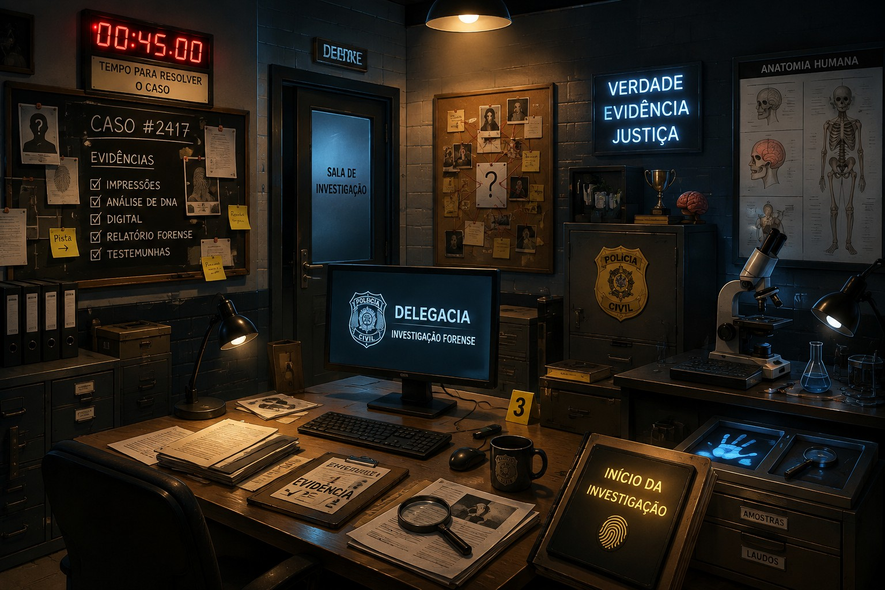

EVIDÊNCIA 01
CASO #2417
O Arquivo Neural
Sete evidências desapareceram do laboratório. Resolva os casos de neuroanatomia. Cada acerto libera uma pista visual. Ao final, as sete peças revelam o suspeito.
No celular, o botão de instalação aparecerá quando o navegador confirmar que o aplicativo está pronto.

FASE 1/7
PISTAS 0/7
00:45
CASO SOLUCIONADO
As sete pistas foram reunidas. O suspeito foi revelado.